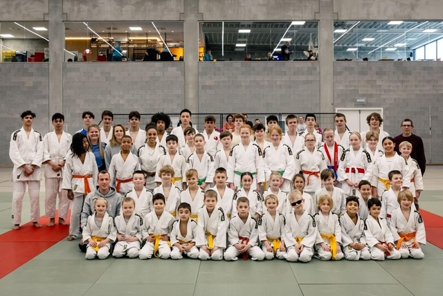
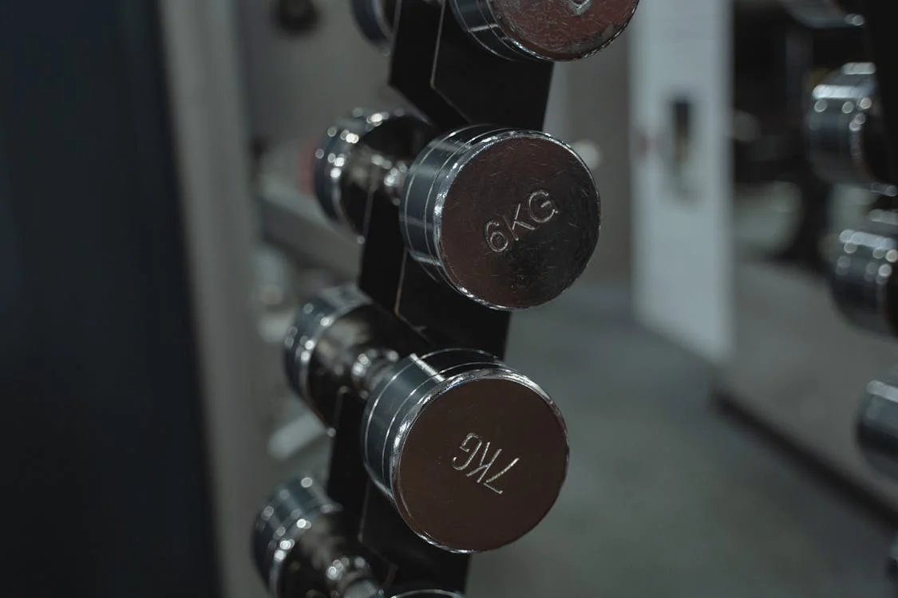

Hobby’s
De reden waarom ik iedereen zou aanraden om een hobby te starten zijn heel uitgebreid. Onder andere heb je altijd sociaal contact met nieuwe mensen en hierdoor leer je hoe je met mensen moet omgaan. Mijn hobby’s zijn judo en fitness.
Judo
Ik doe judo al bijna 3 jaar en de reden dat ik judo zo leuk en graag doe, is de uitdaging. Judo vereist kracht en uithoudingsvermogen. Het verbeteren van de technieken die we doen en tactische strategieën ontwikkelen. De adrenaline rush die je krijgt voor een toernooi met de discipline die hierbij komt kijken.
Fitness
Fitness is voor mij een plaats waar ik mijn fysieke gezondheid kan verbeteren. Mijn spieren versterken en in het algemeen mijn conditie verhogen. Fitness kan mij helpen het bereiken van een gezond gewicht. Mezelf uitdagen om telkens zwaardere gewichten op te tillen dan mijn vorige sessies. Variatie in mijn trainingen houdt het interessant en leuk. Dit doe ik door nieuwe oefeningen te proberen.
Webdesign
Ik heb interesse in het maken van websites en webapplicaties. Dit komt voort uit de combinatie van creativiteit en technische uitdaging. Door oefeningen en webprojecten te maken, heb ik het gevoel dat ik steeds beter word. Ik heb basiskennis in HTML en CSS.